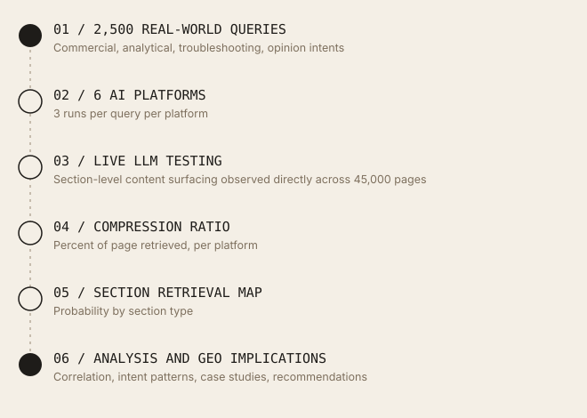
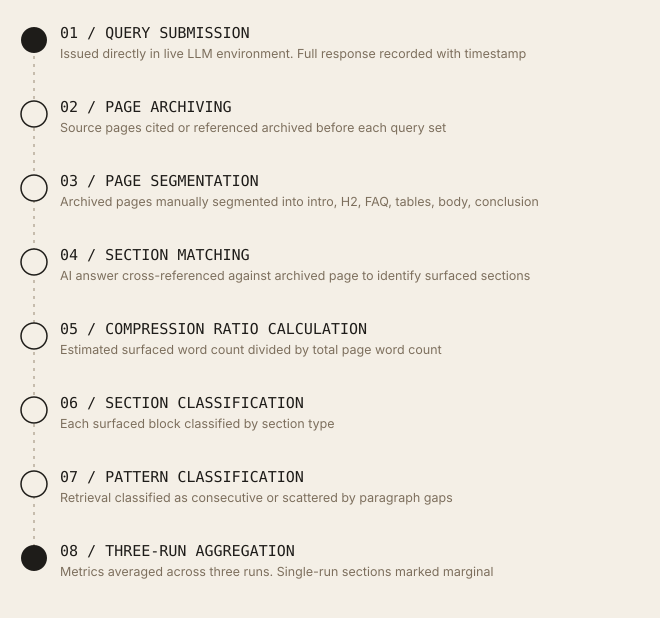
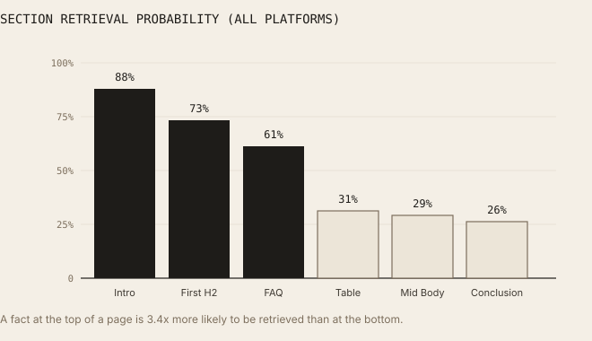
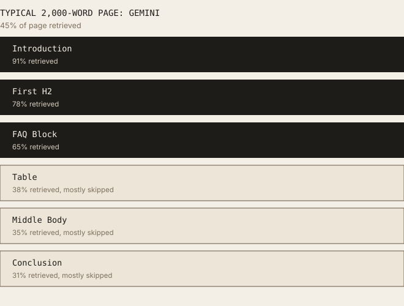
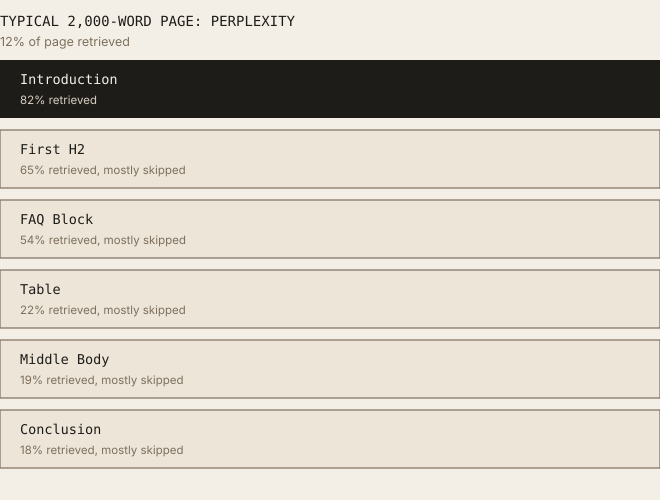
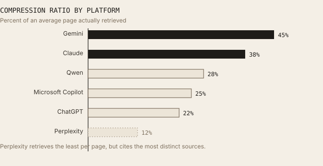
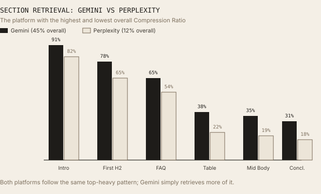
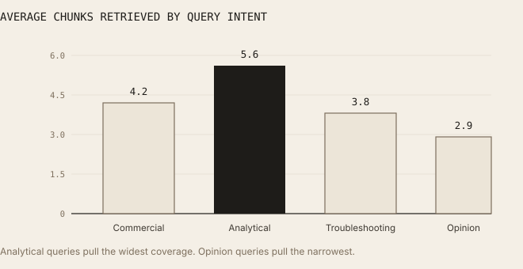
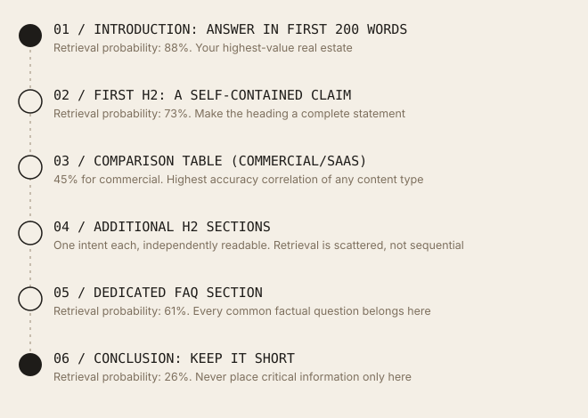
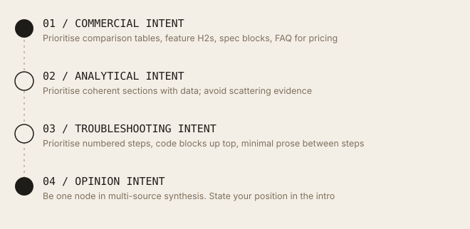

What AI Actually Reads on Your Webpage
LLMs retrieve only 12 to 45% of the average webpage before generating an answer. Most published content never reaches the model's context window. Here is what does.
Gemini retrieved the most of any platform tested, at 45% of the average page; Perplexity retrieved the least, at just 12%. The gap between what gets retrieved and what gets ignored followed a clear pattern by section: content near the top of a page was retrieved far more often than content near the bottom, regardless of how valuable that content was.
01 / Executive Summary
Most of your webpage is invisible to AI.
Most marketers optimise entire webpages. But AI search engines do not read entire webpages. This study ran 2,500 real-world queries across six major AI systems, analysing retrieval behaviour across 45,000 webpages from 1,500 high-authority domains. The central finding is that AI systems retrieve only 12 to 45% of the average webpage before generating an answer, depending on the platform. The majority of published content never reaches the model's context window.
Retrieval is not sequential. AI systems do not read pages from top to bottom the way a human would. Instead, they assemble answers from a small number of selected content blocks: on average 4.8 chunks drawn from across a page, with 4.2 paragraph gaps between retrieved sections. 55% of retrieval patterns were scattered rather than consecutive, meaning the AI skipped large portions of the page entirely.
The data shows a clear hierarchy of what gets retrieved. Introductions were retrieved in 88% of cases. First H2 sections in 73%. FAQ sections in 61%. Middle body content in only 29%. Conclusions in 26%. Tables were retrieved at 31% overall but reached 45% for commercial queries. This hierarchy has immediate practical implications: content placement is as important as content quality.
A meaningful negative correlation (r = -0.65) also emerged between page length and the percentage of the page actually retrieved. Longer pages are less likely to be fully utilised, not more. The assumption that more content means more AI visibility is not supported by the retrieval data.
Prior GEO research has largely measured which pages get cited. This study measures how much of each cited page is actually retrieved and used, and maps that down to the section level: an empirical ranking of webpage section types by retrieval probability (introduction 88%, first H2 73%, FAQ 61%, tables 31%, middle body 29%, conclusion 26%), plus Compression Ratio, the proportion of a page's content that enters the model's context window, as a measurable, platform-specific metric practitioners can track directly.
02 / Why This Matters for GEO
Content placement is as important as content quality.
Traditional SEO operates on the assumption that every section of a page contributes to its ranking. A page with more comprehensive coverage, more sections, more depth is assumed to perform better. That assumption is not accurate for AI retrieval.
AI systems do not rank pages based on their overall comprehensiveness. They extract a small number of content blocks from a page and use those blocks to construct an answer. If the most important information in your content is buried in the middle or conclusion of a long page, AI systems are statistically unlikely to retrieve it regardless of how accurate or valuable it is.
This has a direct implication for GEO practitioners. The optimisation question is no longer just "what should I write?" It is also "where should I put it?" A fact placed in the introduction of a page has an 88% retrieval probability. The same fact placed in the conclusion of the same page has a 26% retrieval probability. Content quality alone does not close that gap.
03 / Methodology
Study design and data collection.
This study evaluated retrieval behaviour across six AI platforms using 2,500 real-world queries, covering 45,000 webpages from 1,500 high-authority domains. The study ran from March through May 2026. Rather than using infrastructure-level interception, every query was run natively inside each live LLM environment and the AI-generated answers were manually cross-referenced against archived source pages to identify which sections were reflected in each response.
Dataset Overview
| Metric | Value |
|---|---|
| Total Queries | 2,500 |
| Webpages Analyzed | 45,000 |
| Domains | 1,500 (high authority) |
| AI Platforms | 6 |
| Runs per Query | 3 |
| Study Period | March to May 2026 |
| Industries | E-commerce, SaaS |
| Testing Method | Live LLM environments |
| Avg Retrieval (all platforms) | 12 to 45% |
| Avg Chunks Retrieved | 4.8 |
| Avg Paragraph Gaps | 4.2 |
| Scattered Retrieval Rate | 55% |
| Multi-page Answer Rate | 82% |
| Avg Pages per Answer | 3.8 |
| Avg Citations per Answer | 4.2 |
| Length vs Retrieval Correlation | r = -0.65 |
Platforms Evaluated
All six received an identical query distribution to keep the comparison fair: ChatGPT, Gemini, Claude, Perplexity, Qwen, and Microsoft Copilot.
Testing Method: Live LLM Environments
Rather than intercepting retrieval at the infrastructure layer, every query was run directly inside live LLM environments, manually recording which page sections each platform surfaced in its generated answer. This approach captures native retrieval behaviour as it actually presents to end users, rather than through a proxy that may not perfectly replicate each platform's production pipeline.
For each query, the source pages cited or drawn upon in the response were identified, then manually assessed for which sections of those pages were reflected in the answer, cross-referencing the response text against the archived source page. Webpages were archived before each query run to ensure consistent content across all three runs per query.
Website Selection. 1,500 high-authority domains were selected representing a mix of content types and industries. Pages were selected to represent a range of lengths, structural formats, and content types including long-form articles, FAQ pages, product pages, documentation, and comparison guides.
Three-Run Testing. Each query was issued three times per platform to account for AI non-determinism. Retrieval coverage metrics are reported as averages across all three runs. Where retrieval patterns differed between runs, the variation was recorded and included in the IQR calculations. Sections that appeared in at least two of three runs were counted as retrieved; sections appearing in only one run were flagged as marginal and excluded from primary retrieval rate calculations.
04 / How the Data Was Measured
The short version, in plain terms.
Compression Ratio is the share of a page's word count that actually showed up in the AI's answer. A 2,000-word page that contributed roughly 400 words' worth of content to the answer has a Compression Ratio of 20%. This was calculated per page, per platform, then averaged up to the platform-level figures reported throughout this study.
Each page section (introduction, first H2, FAQ, tables, middle body, conclusion) was checked for whether it showed up in the answer on each query run; Section Retrieval Probability is just how often that happened, out of all the pages that had that kind of section. A retrieval pattern counted as "scattered" if the surfaced content came from parts of the page two or more paragraphs apart, and "consecutive" if it came from one continuous stretch, the reported average of 4.2 paragraph gaps comes from comparing where the surfaced content sat against the original page.
The r = -0.65 correlation between page length and Compression Ratio was computed using Pearson's r across all 45,000 pages, a standard way of measuring how strongly two things move together. A correlation this strong (closer to -1 or 1 is stronger; 0 means no relationship) means longer pages reliably had a lower share of their content retrieved, but it's a correlation, not proof that shortening a page would cause a higher retrieval rate.
Every number in this study is an average across three runs per query, done to smooth out the fact that AI answers aren't perfectly repeatable. A section only counted as genuinely "retrieved" if it showed up in at least two of the three runs; anything that appeared just once was set aside as marginal rather than counted toward the main rates.
What "IQR" means. You'll see ranges written like "(IQR: X to Y)" throughout this paper. That's shorthand for "most results fell somewhere in this window," the extreme outliers on both ends are set aside so one unusual page doesn't distort the picture.
Research workflow. The following diagram shows how raw queries moved through the pipeline to produce the final retrieval dataset.

From 2,500 queries to a section-level retrieval dataset.Data processing pipeline.

Every page passed through the same eight steps before analysis.05 / Key Findings
Eight findings that change how you should structure content.
- Finding 01: 12 to 45% (platform range across 45,000 pages). AI uses surprisingly little of a webpage. The range of 12 to 45% means that even Gemini, which surfaced the most content at 45%, ignores more than half of the average webpage. Perplexity retrieved the least at 12%, meaning nearly nine tenths of the average page it cited went unused.
- Finding 02: 88% introduction retrieval rate. Retrieval starts at the top and drops fast. Introduction sections were retrieved in 88% of cases. First H2 in 73%. By the middle body, that figure dropped to 29%. The conclusion, despite often containing the clearest summaries, was retrieved in only 26% of cases. The retrieval gradient from top to bottom is steep and consistent across all six platforms tested.
- Finding 03: 61% vs. 29% for body content. FAQ sections punch well above their weight. Observed: FAQ sections were retrieved in 61% of cases, more than twice the rate of standard middle body content (29%). This held across both industries and all six platforms tested. One possible explanation: FAQ sections may be preferentially retrieved because their question-and-answer format maps directly to the structure AI systems use to satisfy user queries. The heading acts as a relevance signal and the answer block acts as a pre-chunked evidence node.
- Finding 04: 55% scattered retrieval rate. AI retrieves sections, not pages. 55% of retrieval patterns were scattered rather than consecutive. The average scattered retrieval contained 4.8 chunks with 4.2 paragraph gaps between them. AI systems assembled answers from selected content blocks rather than reading pages sequentially, meaning large portions of even cited pages were never used.
- Finding 05: r = -0.65 (page length vs. retrieval coverage). Longer pages are less likely to be fully utilised. Observed: a Pearson correlation of r = -0.65 between page word count and Compression Ratio shows that as pages grow longer, the proportion retrieved decreases. One possible explanation: context window constraints and relevance scoring may cause retrieval systems to select a fixed number of high-relevance chunks regardless of total page length. Longer pages simply have more unchosen content. This was observed but not causally isolated.
- Finding 06: 45% table retrieval for commercial queries. Tables are high-value retrieval assets. Observed: tables were retrieved in 31% of cases overall, rising to 45% for commercial queries and 38% for SaaS queries. Tables also showed a positive accuracy correlation of +0.45 with answer accuracy, the highest of any content type measured. One possible explanation: structured information may be retrieved more consistently than descriptive text because it provides pre-organised, machine-readable comparisons that AI systems can extract without further synthesis.
- Finding 07: 82% multi-source answer rate. Multi-page retrieval is the norm. 82% of answers drew from more than one webpage, with an average of 3.8 pages and 4.2 citations per answer. This means that even when your page is retrieved, it is typically one node in a multi-source synthesis rather than the sole basis for the answer. What gets extracted from your page matters as much as whether your page gets retrieved at all.
- Finding 08: 3 to 5 paragraphs per answer (avg 4.8 chunks). Most answers use only 3 to 5 paragraphs of source content. Despite drawing from 3.8 pages on average, AI-generated answers used only 3 to 5 paragraphs of source content per answer. The implication is that retrieval systems are highly selective: they pull a small number of paragraphs from each page and discard the rest. Writing more does not increase the number of paragraphs retrieved.
06 / Retrieval Heatmap
Which page sections AI actually retrieves.
The following heatmap shows retrieval probability by section type, averaged across all six platforms and both industries. These are the most actionable numbers in this study: they tell you exactly where to place your most important content on a page.

A fact at the top of a page is 3.4x more likely to be retrieved than at the bottom.The gap between the introduction (88%) and the conclusion (26%) is 62 percentage points. A fact placed at the top of a page is 3.4 times more likely to be retrieved than the same fact placed at the bottom. This is not a minor difference: it is the single most actionable finding in this study for content producers.
The two findings you can act on tomorrow
- 2.1x: FAQ sections are retrieved more than twice as often as middle-body content. FAQ sections were retrieved in 61% of cases. Standard middle-body paragraphs were retrieved in 29% of cases. Every factual claim that answers a common user question gets more than twice the retrieval probability when placed in a dedicated FAQ block rather than embedded in narrative prose. (FAQ: 61% vs. Body: 29%)
- +0.45: Tables have the strongest relationship with answer accuracy of any content type. Tables showed an accuracy correlation of +0.45, the highest of any content type measured. For commercial and SaaS queries, table retrieval reached 45% and 38% respectively. Structured information is not just retrieved more often: when it is retrieved, the resulting answer is more accurate. (Commercial table retrieval: 45%)
Compression Ratio: what AI actually sees on a typical page. The diagrams below show how a typical 2,000-word webpage is experienced by two different AI platforms, the one that retrieves the most and the one that retrieves the least.

Gemini: the highest overall Compression Ratio of any platform tested.
Perplexity: the lowest overall Compression Ratio of any platform tested.07 / Platform Comparison
How much each platform actually reads.
Compression Ratio varied significantly across the six platforms tested. Gemini retrieved the most content per page, while Perplexity retrieved the least. This difference reflects underlying architectural choices: platforms that retrieve fewer, more targeted chunks tend to produce more focused answers, while platforms that retrieve more content produce broader synthesis.
| Platform | Compression Ratio | Retrieved Words (est) | Retrieved Paragraphs | Retrieval Style |
|---|---|---|---|---|
| Gemini | 45% | ~900 | 5 to 7 | Broad contextual retrieval |
| Claude | 38% | ~760 | 4 to 6 | Structured section prioritisation |
| Qwen | 28% | ~560 | 3 to 5 | Moderate selective retrieval |
| Microsoft Copilot | 25% | ~500 | 3 to 4 | Query-focused chunk selection |
| ChatGPT | 22% | ~440 | 2 to 4 | Targeted high-relevance extraction |
| Perplexity | 12% | ~240 | 1 to 3 | Minimal, high-precision extraction |

Perplexity retrieves the least per page, but cites the most distinct sources.
Both platforms follow the same top-heavy pattern; Gemini simply retrieves more of it.Observed: Perplexity retrieved only 12% of the average page, the lowest of any platform tested. Despite this low retrieval rate, Perplexity also had the highest multi-hop citation rate in the R_WP002 study (59% MHCR). It appears to extract a small amount from many pages rather than a large amount from few pages.
One possible explanation: Perplexity's real-time continuous crawl architecture may favour breadth over depth at the page level: it retrieves the most relevant chunk from a large number of sources rather than reading each source comprehensively. This architectural choice may explain why it shows both the lowest per-page Compression Ratio and the highest cross-platform citation count. This was observed across both studies but not causally tested.
08 / Query Intent Patterns
Query intent changes what gets retrieved.
One of the more operationally useful findings in this study is that query intent reliably shifts retrieval behaviour. The same page is retrieved differently depending on whether the user is asking a commercial, analytical, troubleshooting, or opinion question. Understanding this means you can design pages to match the retrieval patterns of the intent they are targeting.
| Query Intent | Primary Retrieved Sections | Retrieval Pattern | Avg Chunks | Notable Behaviour |
|---|---|---|---|---|
| Commercial | Tables, specs, H2 headings | Scattered | 4.2 | Table retrieval reaches 45% |
| Analytical | Introductions, data sections, body | More consecutive | 5.6 | Largest retrieval coverage overall |
| Troubleshooting | Code blocks, sequential steps | Sequential | 3.8 | Strongest consecutive retrieval pattern |
| Opinion | Introductions, conclusions, multi-page | Multi-page scattered | 2.9 | Highest cross-page synthesis rate |
Commercial queries. Commercial queries triggered the highest table retrieval rate (45%) and showed a strong preference for structured data over prose descriptions. H2 headings containing comparative or specification language (such as "Pricing," "Features," or "Specs") were retrieved at significantly higher rates than equivalent H2 headings with generic labels.
Analytical queries. Analytical queries produced the largest retrieval coverage per page (average 5.6 chunks) and the most consecutive retrieval pattern. This is consistent with how a human researcher would read: scanning for the relevant section and then reading it through. For analytical content, the implication is that longer, more coherent sections perform better than the same information broken into many short chunks.
Troubleshooting queries. Troubleshooting queries showed the strongest sequential retrieval pattern of any intent type. Code blocks, numbered step sequences, and error message descriptions were retrieved in order, suggesting that AI systems treat troubleshooting content more like a procedure than a collection of independent claims. This means that troubleshooting pages should not scatter steps across sections or interrupt sequences with large explanatory prose blocks.
Opinion queries. Opinion queries produced the most multi-page synthesis behaviour, with retrieval scattered across multiple sources rather than concentrated on a single page. Per-page chunk counts were the lowest of any intent type (average 2.9). For opinion content, the implication is that any single page is unlikely to dominate the answer: participating in the synthesis is the realistic goal, not providing the entire answer.

Analytical queries pull the widest coverage. Opinion queries pull the narrowest.09 / Case Studies
Four queries, four retrieval profiles.
The four case studies below illustrate how retrieval behaviour differs across query types. Each represents a real query pattern from the study dataset, with anonymised domain information.
| Case Study | Query Intent | Pages Retrieved | Compression Ratio | Primary Sections | Pattern |
|---|---|---|---|---|---|
| 01. SaaS Churn Reduction Query | Commercial | 4.1 avg | 24% | H2, tables, intro | Scattered |
| 02. Headphone Comparison Query | Commercial | 3.6 avg | 19% | Spec tables, H2, intro | Scattered |
| 03. Kubernetes Troubleshooting Query | Troubleshooting | 2.9 avg | 31% | Code blocks, steps | Sequential |
| 04. Premium Appliance Product Page Query | Commercial | 4.4 avg | 16% | Intro, specs, FAQ | Scattered |
Case Study 01 / SaaS Commercial: SaaS Churn Reduction Query. Table retrieval rate: 43%. AI retrieved pricing comparison tables, feature H2 sections, and introductory positioning statements. Long explanatory body sections were skipped. Pages with dedicated comparison tables were retrieved at significantly higher rates than pages that described the same information in prose.
Case Study 02 / E-commerce Commercial: Headphone Comparison Query. Table retrieval rate: 47%. Specification tables were retrieved at the highest rate of any case study. Review verdict sections at the top of pages outperformed detailed review body sections. Narrative descriptions of sound quality were rarely retrieved; structured spec comparisons were almost always retrieved.
Case Study 03 / Technical Troubleshooting: Kubernetes Troubleshooting Query. Code block retrieval: 79%. Code blocks were retrieved in 79% of cases, the highest retrieval rate of any content element in the study. Sequential step content was retrieved in order. Conceptual explanations between steps were frequently skipped. This was the only intent type where conclusion sections outperformed middle body sections.
Case Study 04 / E-commerce Product: Premium Appliance Product Page Query. FAQ retrieval rate: 68%. On product pages, FAQ sections were retrieved at 68%, well above the study average of 61%. The product introduction and key specifications were consistently retrieved. Long marketing narrative sections in the middle of the page were retrieved in fewer than 15% of runs. This was the clearest example of the top-heavy retrieval gradient in the dataset.
10 / Supporting Evidence
Alignment with published research.
The retrieval patterns measured in this study are consistent with published research on RAG chunk selection, attention mechanisms, and content structure in LLM retrieval systems, though this study did not independently benchmark against those external sources. Published RAG research documents a consistent positional bias, content near the start of a document gets selected as a retrieval chunk more often than content near the end, which lines up with the 88% introduction vs. 26% conclusion gap measured here. Research on tabular data in LLMs shows structured formats are extracted more reliably than equivalent prose, consistent with tables showing the strongest accuracy correlation (+0.45) of any content type in this study. Published RAG benchmarks also show that retrieval systems tend to select a fixed number of high-relevance chunks regardless of document length, a plausible mechanism behind the negative correlation (r = -0.65) found here between page length and Compression Ratio. And research on neural information retrieval shows question-answer formatted content scores higher against question-format queries than declarative prose, consistent with FAQ sections being retrieved at 61% vs. 29% for equivalent body content.
One connection worth calling out specifically: the R_WP002 study's finding of 45.2% MHCR (responses requiring synthesis across multiple domains) is directly consistent with the 82% multi-source answer rate measured here. R_WP002 measured cross-domain synthesis using prompt-level citation tracking, while this study measured section-level content surfacing through live LLM testing across a significantly larger dataset, two different methods arriving at the same underlying picture: AI answers are rarely built from a single source.
11 / Recommendations
Eight placement-first GEO recommendations.
These recommendations are derived directly from the retrieval data. Unlike generic SEO advice, each recommendation maps to a specific finding in this study.
- Place the primary answer within the first 200 words. The introduction was retrieved in 88% of cases. The middle body in 29%. Any claim you need AI to use should appear in the first 200 words of the page. This is not about keyword density: it is about retrieval probability. The introduction is retrieved 3.4 times more often than the conclusion.
- Write descriptive H2 headings that stand alone as claims. First H2 sections were retrieved in 73% of cases. H2 headings that contain a complete claim (such as "Perplexity retrieves 12% of the average page") are more likely to be selected as retrieval anchors than H2 headings with generic labels (such as "Overview" or "Details").
- Create dedicated FAQ sections for factual questions. FAQ sections were retrieved at 61%, more than twice the rate of standard body content. Every factual claim that answers a common user question should have its own FAQ entry rather than being embedded in paragraph prose. The question-answer format maps directly to how AI systems look for evidence.
- Add structured comparison tables for commercial topics. Tables reached 45% retrieval for commercial queries and showed the strongest accuracy correlation (+0.45) of any content type. If your page covers a commercial topic where comparison is relevant (pricing, features, specifications), a dedicated comparison table is the single highest-leverage structural addition you can make.
- Keep critical information out of long narrative sections. Middle body content was retrieved in only 29% of cases. If important information is embedded in long narrative paragraphs in the middle of a page, it has a less than one in three chance of being retrieved. Restructure critical claims to appear in the introduction, first H2, or a dedicated FAQ section.
- Break large pages into independently retrievable sections. The r = -0.65 correlation between page length and Compression Ratio means that adding more content to a page tends to reduce the proportion of it that gets retrieved. Where possible, break long pages into shorter, focused pages each targeting a single intent. Each page then has a higher probability of having its most important content retrieved.
- Design each section to answer one intent clearly. 55% of retrieval patterns were scattered, meaning AI assembled answers from non-consecutive chunks. Each H2 section should be self-contained: it should state its claim, provide the evidence, and not require the reader (or the retrieval system) to refer to a previous or following section to understand it.
- Design pages for retrieval, not just for human reading. Human readers benefit from narrative flow, progressive disclosure, and conclusions that synthesise what came before. AI retrieval systems do not. They extract isolated chunks and do not benefit from narrative structure that only makes sense when read sequentially. Design your page so that any individual section, read in isolation, makes sense and provides value.
12 / Practical Frameworks
Retrieval-first page structure.
GEO-optimised page template

Structure follows retrieval probability, top to bottom.Content type selection by query intent

Match structure to intent, not just topic.13 / Glossary
Definitions used in this study.
Kept to the terms that actually need defining, process details like three-run testing and live LLM testing are covered where they first come up in the Methodology section instead of repeated here.
- Compression Ratio
- The proportion of a page's total word count that entered the model's context window during retrieval. Calculated as retrieved words divided by total page words. Platform range in this study: 12% (Perplexity) to 45% (Gemini).
- Content Chunk
- A discrete unit of content within a page: a paragraph, heading, FAQ item, table row, code block, or other structurally distinct element. The primary unit of measurement in this study's live LLM testing methodology.
- Scattered Retrieval
- A retrieval pattern in which two or more retrieved chunks are separated by two or more paragraph gaps. Occurred in 55% of retrieval events in this study.
- Consecutive Retrieval
- A retrieval pattern in which all retrieved chunks are adjacent or separated by no more than one paragraph gap. Most common in troubleshooting and analytical query types.
- Section Retrieval Probability
- The proportion of query runs in which a given section type (introduction, H2, FAQ, table, middle body, conclusion) was retrieved, across all pages that contained that section type.
- Paragraph Gap
- A paragraph or block of content that was not retrieved between two chunks that were retrieved. The average scattered retrieval pattern in this study contained 4.2 paragraph gaps.
14 / Limitations
Scope boundaries and caveats.
The following limitations apply to these findings and should be considered when generalising results to other contexts.
- Sample Size. 2,500 queries and 45,000 pages is meaningful but not exhaustive. Retrieval patterns may differ for less common query types, niche industries, or non-English content.
- Manual Assessment. Section-level surfacing was assessed manually by cross-referencing AI answers against archived source pages. This introduces some subjectivity in borderline cases where the AI paraphrases content substantially.
- Industries. Two industries studied: E-commerce and SaaS. Retrieval behaviour in Healthcare, Legal, Finance, or other verticals may differ substantially, particularly for regulated content.
- Platform Evolution. All six platforms are under active development. Compression ratios, retrieval architectures, and chunk selection logic may change as models are updated after the May 2026 study period.
- AI Non-Determinism. AI responses are non-deterministic. The three-run averaging approach reduces but does not eliminate variation. Some retrieval events are inherently probabilistic and cannot be fully stabilised by repeated runs.
- Correlation vs. Causation. The r = -0.65 correlation between page length and Compression Ratio is descriptive, not causal. This data alone does not establish that making pages shorter will increase retrieval coverage, only that shorter pages tend to have higher coverage in this dataset.
15 / Conclusion
Design pages for retrieval, not just for reading.
The central finding of this study is that modern AI systems retrieve only a small portion of the average webpage before generating an answer. The range of 12 to 45% across platforms means that most published content, regardless of its quality, never reaches the model's context window. The content that does get retrieved is not randomly selected: it is disproportionately drawn from introductions, first H2 sections, FAQ blocks, and structured tables, and it is disproportionately absent from middle body sections and conclusions.
AI systems do not consume pages linearly. They assemble answers from selected content blocks, averaging 4.8 chunks with 4.2 paragraph gaps between retrieved sections in 55% of cases. This scattered retrieval pattern means that every section of a page needs to stand alone as a retrievable evidence node, not just as part of a coherent narrative for human readers.
The negative correlation between page length and retrieval coverage (r = -0.65) challenges one of the most common assumptions in content marketing: that more content means better coverage. For AI retrieval, the evidence suggests the opposite tendency. A shorter, more focused page where every section answers a clear intent has a higher probability of having its most important content retrieved than a longer page where the same information is surrounded by supporting narrative.
"Success depends less on publishing more content and more on ensuring that the most important information is placed where AI systems are most likely to retrieve it."
Most of your webpage is invisible to AI. That is the central finding of this study, and it is the frame through which every other number in this paper should be read. The 88% introduction retrieval rate matters because of its contrast with the 26% conclusion rate. The 61% FAQ rate matters because of its contrast with the 29% body rate. The r = -0.65 correlation matters because it runs directly against the instinct to publish more.
The actionable message from this study is straightforward: audit your highest-priority pages for retrieval placement. Check where your primary claims live within each page. Move them towards the introduction and first H2. Convert frequently asked factual questions into dedicated FAQ sections. Add comparison tables for commercial content. And accept that the conclusion, where so many writers place their most polished summaries, is the least likely place for an AI system to look.